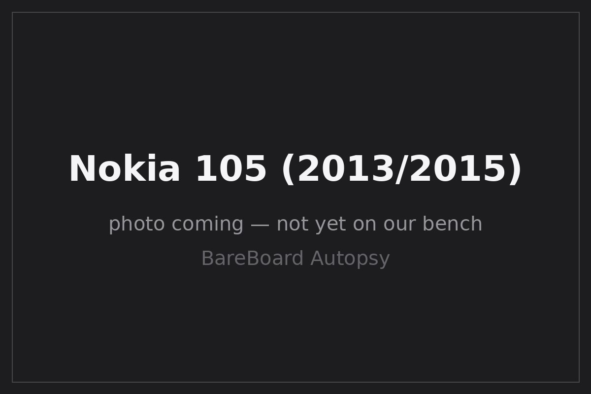

BareBoard Autopsy Report · Mobile Phones
Nokia 105 (2013 / 2015) Likely
The €15 phone: Nokia's 2013 ultrabasic (RM-908), announced at Mobile World Congress 2013 Trusted Reviews, and its 2015 Microsoft-era successor (RM-1134) Microsoft. These are two separate generations — the teardown evidence below belongs to the RM-908 and is never assigned to the RM-1134. We have never owned, opened, booted, probed, tested, or disassembled a Nokia 105 of either generation.

What is this thing?
The Nokia 105 (2013), type RM-908, is a dual-band GSM 900/1800 candybar announced February 25, 2013 and released that May at a €15 price point GSMArena Trusted Reviews. It packs a 1.45-inch 128×128 TFT display, an FM radio, and a flashlight into a 70 g body with a one-piece dust- and splash-proof keymat GSMArena.
The Nokia 105 (2015), type RM-1134, was announced by Microsoft Mobile on June 3, 2015 as the successor, in single- and dual-SIM versions Confirmed Microsoft. It is a distinct hardware generation; public teardown evidence for its internals is thinner, and we do not port RM-908 findings onto it.
Timeline
- 2013-02-25 — Nokia 105 (RM-908) announced at MWC 2013, priced at €15 Trusted Reviews.
- 2013-05 — RM-908 released GSMArena.
- 2013 — Public teardown documents the Infineon X-GOLD 110 (PMB7900) and Micron N25W064A 8 MB NOR flash Likely Electronics360 teardown Fierce Network.
- 2015-06-03 — Microsoft announces the new Nokia 105 / 105 Dual SIM (RM-1134) Confirmed Microsoft.
- 2026-09-27 — This report published from public records; no unit on our bench.
Outside
B One-piece dust-proof, splash-proof keymat GSMArena
C Flashlight; FM radio (stereo) GSMArena
D Removable rear cover; BL-5CB 800 mAh battery GSMArena
RM-908: 107 × 44.8 × 14.3 mm, 70 g; up to 12.5 hours talk time claimed GSMArena. No camera, no Bluetooth, no GPRS/EDGE data — voice, SMS, radio, and flashlight only GSMArena.
Board
Public teardowns of the RM-908 show a highly integrated single-chip-architecture board: the Infineon (later Intel Mobile Communications) X-GOLD 110 (PMB7900) baseband — a 104 MHz C166S V2 core part aimed at ultra-low-cost handsets — paired with a Micron N25W064A 8 MB NOR flash and 384 KB of RAM Likely Electronics360 teardown EE Times LPCWiki — Nokia 105. Infineon positioned the X-GOLD 110 as the highest-integration part of its day for this segment EDN.
Chips (RM-908 only)
| Ref | Marking / identity | Role | Confidence | Dig deeper |
|---|---|---|---|---|
| BB | Infineon / Intel X-GOLD 110 — PMB7900 (104 MHz C166S V2) | Baseband SoC: GSM stack, UI, peripherals | Likely | Electronics360 teardown · EE Times — no public datasheet located |
| Flash | Micron N25W064A — 8 MB NOR | Firmware + user storage | Likely | Electronics360 teardown · N25W064A datasheet (PDF mirror) |
| RAM | 384 KB | Working memory | Likely | LPCWiki — Nokia 105; packaging unverified — no public datasheet claimed |
FCC
No FCC filing for the Nokia 105 (RM-908 or RM-1134) has been located in public records Unknown. The 105 was aimed at markets outside the United States and appears never to have gone through U.S. certification under a located grantee code. This section will be completed from the FCC OET database if a filing surfaces, or from a unit label when one reaches our bench.
Debug / service modes
The X-GOLD 110 family exposes the standard Infineon service and flashing interfaces of its era at the silicon level; Nokia's factory tooling used wired service connections for flashing and diagnostics. We describe this only at the documented high level. We have never connected to a 105's service interface, we publish no pinout, no baud rate, no procedure, and no instructions for defeating any lock or protection. We listen; we don't knock.
Public findings & what we didn't do
- ✅ Assembled the RM-908 chip table from public teardowns (X-GOLD 110 PMB7900, N25W064A, 384 KB RAM) Electronics360.
- ✅ Kept RM-908 and RM-1134 strictly separate — no chip identities ported across generations.
- ✅ Cited Microsoft's own 2015 announcement for the RM-1134 Microsoft.
- ❌ We have not opened, booted, probed, or photographed a Nokia 105 ourselves.
- ❌ We have no verified internals for the RM-1134 (2015).
- ❌ We have not tested any service interface or captured any boot log.
By the numbers
| Metric | Value | Source |
|---|---|---|
| Launch price (2013) | €15 | Trusted Reviews |
| Display | 1.45″ 128×128 TFT | GSMArena |
| Baseband (RM-908) | X-GOLD 110 PMB7900 @ 104 MHz | Likely Electronics360 |
| Flash / RAM (RM-908) | 8 MB NOR / 384 KB | Likely LPCWiki |
| Battery | BL-5CB, 800 mAh (removable) | GSMArena |
| Weight / size | 70 g; 107 × 44.8 × 14.3 mm | GSMArena |
Glossary
| X-GOLD 110 | Infineon's ultra-low-cost GSM/GPRS baseband SoC (PMB7900), later under Intel Mobile Communications. |
| C166S V2 | Infineon's 16-bit microcontroller core used inside the X-GOLD 110. |
| RM-908 / RM-1134 | Nokia type designations: RM-908 is the 2013 105, RM-1134 the 2015 105. |
| NOR flash | Flash memory supporting execute-in-place; firmware storage here. |
Sources & confidence
- Microsoft — the new Nokia 105 and 105 Dual SIM (2015-06-03) (primary, manufacturer).
- Electronics360 — video teardown: what's inside Nokia's $20 phone (secondary, teardown-backed).
- Fierce Network — 105 teardown economics (secondary).
- LPCWiki — Nokia 105 (community documentation).
- EE Times — X-GOLD 110 (secondary).
- Micron N25W064A datasheet (PDF mirror) (primary, manufacturer document mirrored).
- GSMArena — Nokia 105 specs (secondary).
- Trusted Reviews — 105 launch (secondary).
| Claim | Confidence | Basis |
|---|---|---|
| RM-1134 announced 2015-06-03 by Microsoft | Confirmed | Microsoft's own announcement (primary) |
| RM-908: X-GOLD 110 PMB7900, N25W064A 8 MB, 384 KB RAM | Likely | Multiple teardown reports; die-level verification awaits the bench |
| Dates, specs, €15 price | Likely | Corroborated secondary records |
| RM-1134 internals | Unknown | No verified teardown evidence located |
| FCC ID | Unknown | No filing located |
Legal note
This report is a transformative educational summary of publicly available records. Product names and marks belong to their owners. We describe only publicly documented service interfaces at a high level; we publish no lock-bypass, authentication-defeat, firmware-extraction, or unsafe service procedures. Our posture: we listen, we don't knock.
Related reports
- Nokia 1100 — the earlier ultrabasic classic
- Nokia 1110 / 1110i — the mid-2000s DCT4 entry phone
- Nokia 1200 — the 2007 ultrabasic